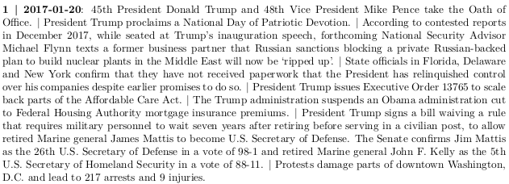

devtools::install_github("jaytimm/dailypotus")
The dailypotus package includes functions for scraping/returning timelines of the two most recent American presidencies (45 & 46) from Wikipedia. A simple demonstration is presented here.
1 dailypotus
The two functions are at work below. The daily_wiki_trump returns a table of executive branch happenings from 20 Jan 2017 to 20 Jan 2021. The daily_wiki_biden function returns an up-to-date (and identically structured) table for the ongoing Biden Presidency.
x45.46 <- dailypotus::daily_wiki_trump() |>
rbind(dailypotus::daily_wiki_biden())Table structure is detailed some below. The folks at Wikipedia have delineated events via bullet points per each day of the last two presidencies, which have been enumerated here in the bullets column as independent rows.
library(dplyr)
x45.46 |>
select(-quarter:-daypres, -dow) |>
head() |>
DT::datatable(rownames = FALSE,
options = list(dom = 't',
pageLength = 6,
scrollX = TRUE))2 A simple use-case
summary <- x45.46 |>
filter(!is.na(Events)) |>
mutate(tokens = tokenizers::count_words(Events)) |>
group_by(date) |>
mutate(daily_count = sum(tokens)) |>
slice(1) |>
ungroup()For demonstration, we calculate total word counts of event descriptions per day. The plot below, then, summarizes these daily word counts since Jan 2017. The plot itself is fairly meaningless, but the hover-action should be useful (to contextualize other data points, eg). For clarity purposes, only the first event for each day is included in the pop-up.
summary |>
mutate(text = stringr::str_wrap(string = Events,
width = 20,
indent = 1,
exdent = 1)) |>
plotly::plot_ly(x = ~date,
y = ~daily_count,
color = ~pres,
text = ~text,
type = 'scatter',
mode = 'lines') |>
plotly::layout(#atitle = "Top 10 Drug Types",
tooltip = c('Events'),
yaxis = list (title = "Daily event word count per Wikipedia"))